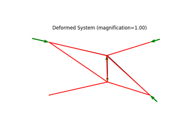

Truss Examples
For more in-depth information about the colormaps available in matplotlib as well as a description of their properties, see the Tutorials.



3d truss example demonstrating large deformation analysis.
3d truss example demonstrating large deformation analysis.